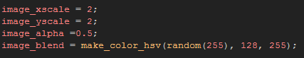
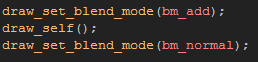
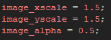
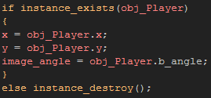

Tutorial
Page 5 of 10
Lights Part I
We have shown how surfaces can be used to draw static images to save cpu and draw cycles, and we have seen how surfaces can be used to "catch" instances and display them while the instance itself is removed, so
now lets look at another application for surfaces... Lights!
There are many, many ways to do lighting effects within GameMaker:Studio but for this example we are going for a simple mixture of additive blending on sprites, and subtractive blending on a surface, with
the final goal being a surface with holes "punched" in it to allow the additive lights to show through. Sound complicated? It's not!
First thing's first. Let's create our base light object. Create a new object, call it "obj_Light" and assign it the sprite called "spr_Round_Light" from the sprite resources. Set it's depth to -1600, and then give it a
create event with the following code:

The above code sets the image xscale and yscale to be twice the size of the sprite (you'll find out why in a moment), sets the alpha to be 0.5 (so the light won't be overpoweringly bright) and assigns a random colour
to be blended into the final light instance. The colour part is optional, but we'll use it just now to give an interesting effect and to illustrate what can be done.
Now add a draw event and give it the following code:

The above code simply draws the sprite at it's position within the room using an additive blend mode, which is an excellent blend mode for all sorts of "bright" effects, like explosions, lasers and, obviously, lighting.
You can place some of these instances in your room now if you wish to see what happens... they do look a bit like lights, but there is no darkness to offset them with, so it's not really that good an effect. Which is
why we are going to use a surface!
However, before doing that, let's create another light object for our player, so that he can have a flashlight and that way we can see how the surface we use for the darkness is updated dynamically in real time
whenever the player moves across the screen.
For this make another new object, call it "obj_Player_Light", assign it the appropriate sprite from the sprite resources, then set it's depth to -1600. Now, give it the previously created "obj_Light" as it's parent
so that it inherits the parent objects properties. This will also make the surface drawing code easier!
In thecreate event for our new object, place the following:

And in the step event this:

These codes will make the light follow the player object and always point in the same direction as his body (this is controlled in the player by the b_angle variable), but unless we actually create this
object then we won't ever see it working! So add an extra line into the create event of the "obj_Player" object to create an instance of the "obj_Player_Light".
You can test the game again now and see what it looks like before moving on to the next part where we will add the surface darkness.
Click on the Next button to go to the next page of the tutorial.